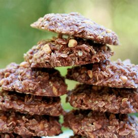

No Bake Cookies

Tasty no bake cookies made with oatmeal, peanut butter and cocoa.
Ingredients
- 1.75 cups white sugar
- .5 cup milk
- .5 cup butter
- 4 tablespoons unsweetened cocoa powder
- .5 cup crunchy peanut butter
- 3 cups quick-cooking oats
- 1 teaspoon vanilla extract
Steps
-
In a medium saucepan, combine sugar, milk, butter, and cocoa.
Bring to a boil, and cook for 1.5 minutes. Remove from heat,
and stir in peanut butter, oats, and vanilla. Drop by
teaspoonfuls onto wax paper. Let cool until hardened.